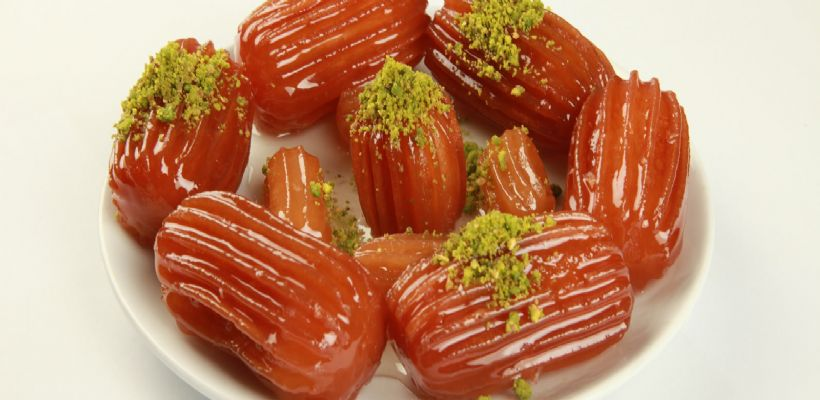

Nagerecht (Tulumba tatlisi)
Gehaktbrood
Tulumba tatlisi is een zoete lekkernij dat de hele tijd in een pan wordt voorbereid. De vorm krijgen ze door een spuitzak te gebruiken.
Ingredienten
- 125 gram margarine
- 2 eetlepels suiker
- 2 ½ glazen meel
- 4 eieren
- 2 glazen water
- 2 glazen zonnebloemolie
- 1 theelepel zout
Ingredienten van de stroop:
- 2 glazen suiker
- 2 glazen water
- 1 eetlepel citroen
Bedeidingswijze
1. Verwarm de oven voor en maak de plakjes bladerdeeg los van elkaar en leg ze op het aanrecht om te ontdooien.
2. Leg vervolgens als het deeg ontdooit is een eetlepel gehakt mengsel in het midden van het deeg.
3. Vervolgens doe je de randjes van het deeg naar elkaar toe en druk ze voorzichtig aan.
4. Leg ze op het bakpapier van de bakplaat en bestrijk ze met het losgeklopte ei.
5. Doe ze in de oven en laat ze bakken tot ze goudbruin zijn.
Tip: Met veel suiker het lekkerst